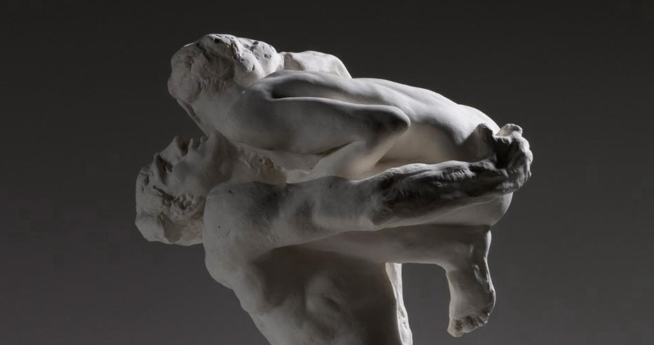

Świat był w twarzy ukochanej
Pragniemy wyłączności. Absolutnego oddania. Bezwzględnego zawierzenia. A przecież — pisze Rilke w swoim „Requiem” — „to grzech, wolności nie pomnażać tego, kto kocha nas. Kochać to tylko tyle: drugiemu dawać wolność. Więzić bowiem nietrudno, nie wymaga to nauki”.
Rilke również nie zdołał uniknąć owej pokusy podporządkowania. „Tak, wiem dobrze, że on musi za wszelką cenę mieć w kimś jakieś oparcie” — wyznaje Lou Andreas-Salomé w liście do swej przyjaciółki. „Żąda bezwzględnej wyłączności, jeśli nie u mnie, to szuka tego gdziekolwiek indziej: lepiej zresztą, gdy znajdzie to bodaj u kogoś najmniej odpowiedniego, niżby nie miał znaleźć nigdzie”.
Dopiero pod koniec życia wyzna poeta w strofach wiersza, iż chłonąc świat w ukochanej twarzy, zachwycony odbijającą się w niej przyszłością, rozpływał się w jego nadmiarze, tracąc z oczu ów „doświadczony krajobraz miłości”:
Świat był w twarzy ukochanej —
ale nagle wylał się, wypłynął:
świat jest z zewnątrz, świat nie do objęcia.
Czemu nie piłem, gdym podniósł do ust,
czemu nie piłem z pełnej lubej twarzy
świata, co bliski był, pachnący moim ustom?
Ach, piłem. Piłem nie do wyczerpania.
Lecz i mnie przepełnił nadmiar świata,
i gdy piłem, sam przebrałem miarę.
Wiersz Rilkego „Świat był w twarzy ukochanej” w przekładzie M. Jastruna, fragment „Requiem” w przekładzie A. Pomorskiego, fragment listu Lou Andreas-Salomé w przekładzie W. Markowskiej.